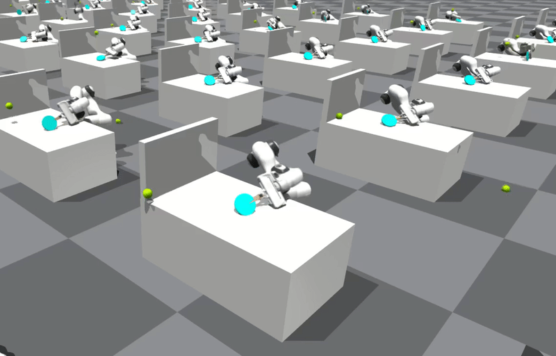
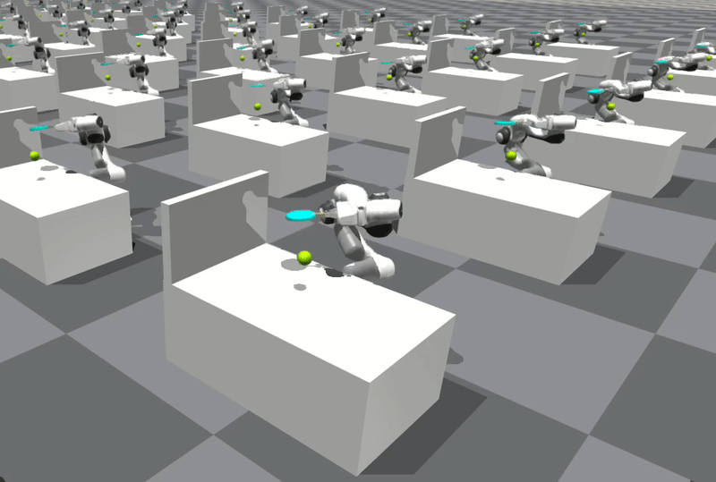
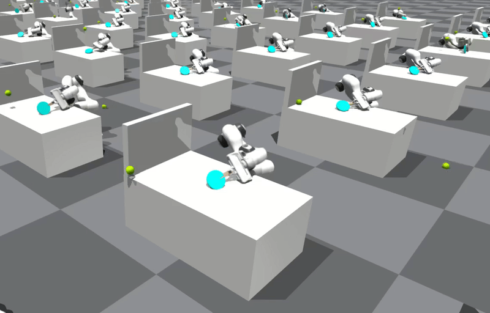
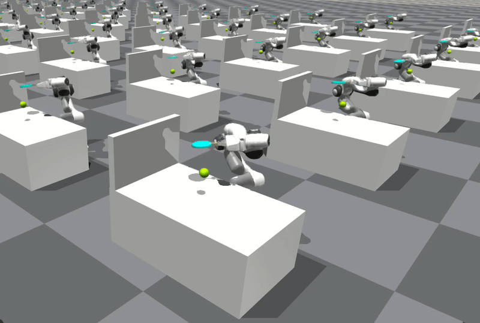

Successor Representation
 



In the context of robotics, generalization across tasks is crucial. Consider an agent playing ball games with a racket. An agent trained to dribble the ball vs hitting the ball, should be able to quickly learn to play squash, as many of the skills such as approaching and hitting the ball are shared in a more complex task of playing squash. From the learners perspective, all these tasks share the same common properties, the ball falls to the ground due to gravity, depending on heavy it is, and it moves with certain velocity when it is hit by the racket. In other words, all these tasks share common dynamics. What changes is the small details in the reward function. For instance the difference between dribbling a ball vs hitting it against the wall, can be the rotation angle of the racket and the amount of force required.
If it was possible to learn a representation that could decouple such discrepancies between the reward functions, i.e. decoupling the task dynamics and task-related dynamics, one could train an agent that could re-use the learned representation and quickly fine-tune itself to the more task-specific representation and achieve a faster learning.
Successor features (SF) is one framework that enables such decomposability of representation, explicitly built into the RL formulation. The main goal of this framework is to promote a desired property where instead of being posed as a decoupled representation learning problem, transfer is instead integrated into the RL framework as much as possible, preferably in a way that is almost transparent to the agent. SFs in theory, enable fast transfer between tasks that differ only in their reward function. The advantage of using an SF framework over model-based RL where one learns models of the reward function, is the ability of dynamics representation re-use which is decoupled from the task-specific representation.